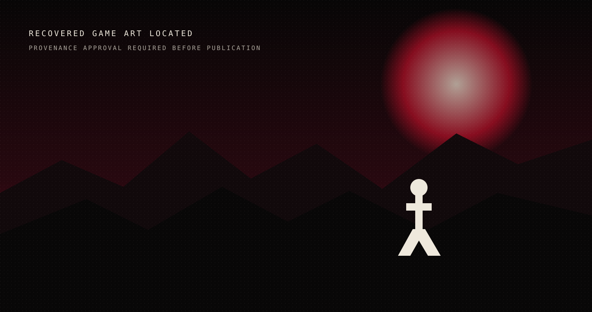

HEARTLINE
Lyrics that stay.
Lyrics that stay with the song—even when the connection does not.
View the case study →No borrowed words.
Final interface capture pending.
CancerShift
Change the dataset.
A classifier is only convincing after the dataset changes.
Independent computational-biology research. Not represented as peer reviewed.
Read the research →Accuracy alone does not establish clinical utility. Cohort labels and original figures remain withheld pending verification.
To Ash Again

A four-act story built out of character state, powers, enemies, saves, and consequences.
Enter the case study →Flooded
Still becoming.
A poetry collection still becoming an object.
No poem is quoted until an exact excerpt is approved. The final feature requires the original book photograph and material studies.
Open the writing study →More signals.
About / Student Poets Association
Make room for people.
I founded a student writing community built through open mics, showcases, and collaborative arts programming.
About Hasan →